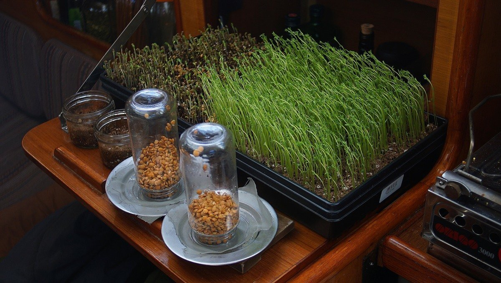
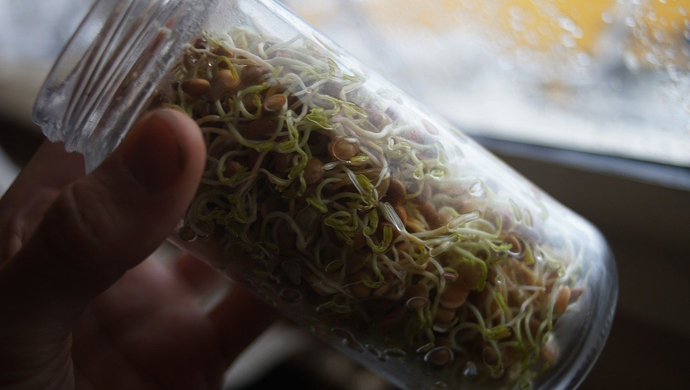

growing food
Growing food aboard is possible. Sprouting seeds is a good way to transform dried foods into fresh foods, sprouting reduces anti-nutritional compounds in raw legumes making more of their nutrients available. Microgreens are germinated legumes grown up to 10cm, microgreens contain considerably higher levels of vitamins and carotenoids, about five times greater than their mature plant counterparts.
Sprouting offers a constant, and reliable supply of fresh and healthful food. Dry seeds keep a long time, and take up little space. Sprouting is also a good way to cut down on cooking time, thusly saving fuel.
On the boat, we grow lentils sprouts and fenugreek microgreens. To learn more about growing food aboard a sailboat, we recommend reading Ken Neumeyer's Sailing The Farm, and this Sprouting Guide.
Sprouting lentils
- Soak 1/3 cup of lentils overnight.
- Move into an upside-down jar covered with a mesh to drain water.
- Rinse every morning, enjoy fresh greens daily.